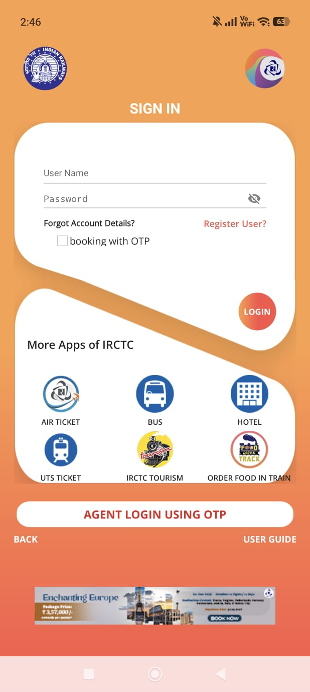
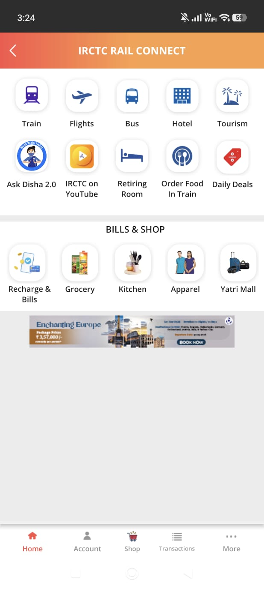
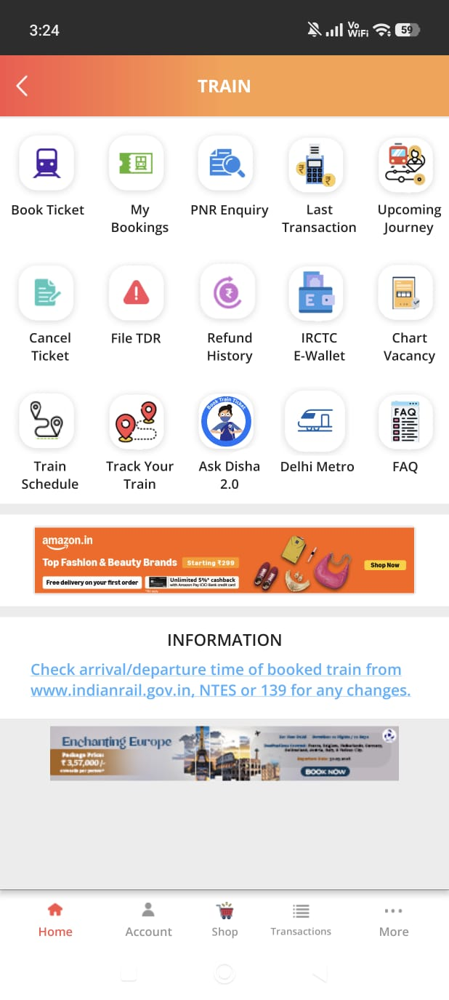
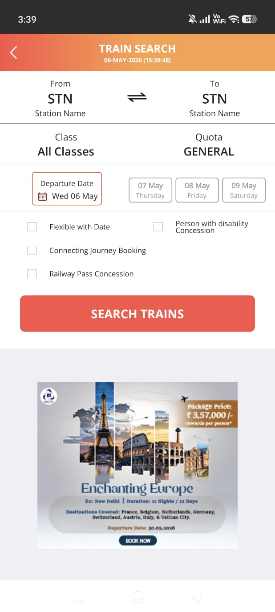
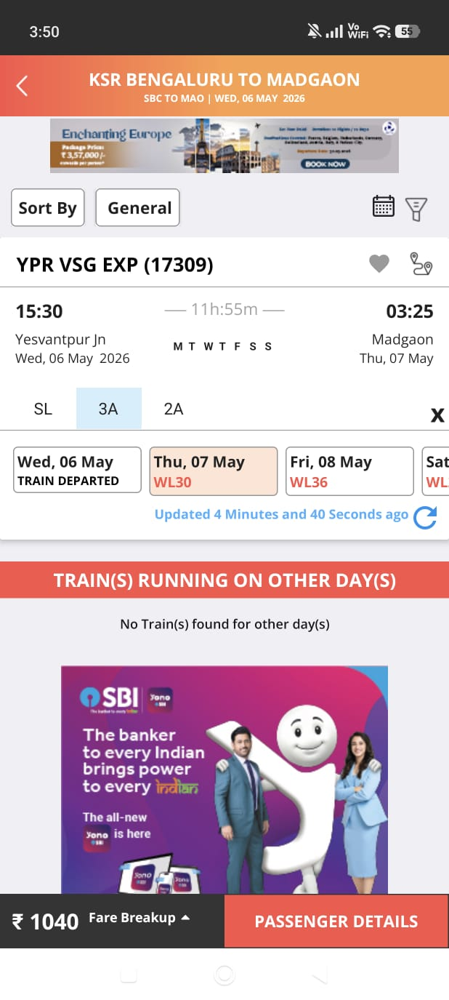
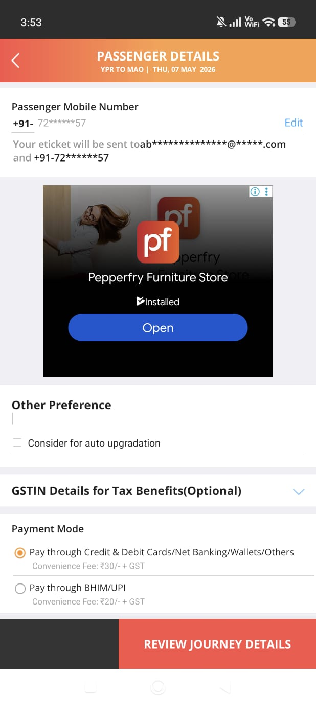
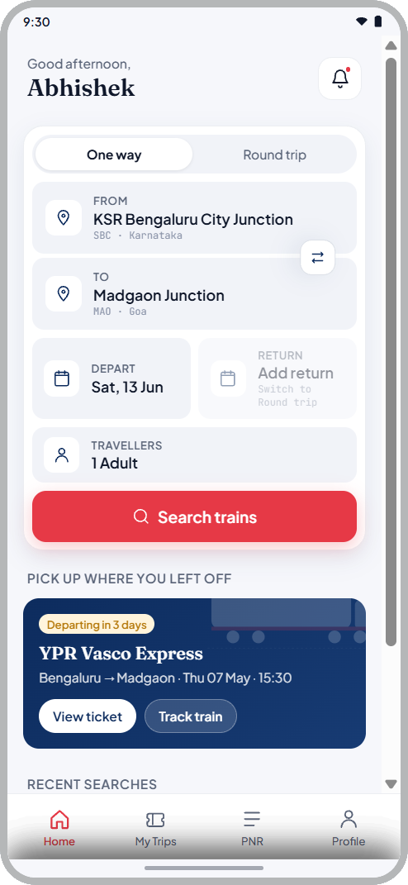
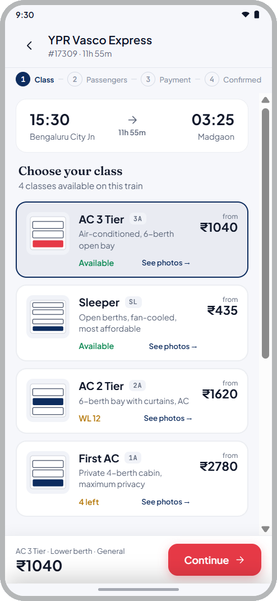

AI Speed. Human Depth.
I didn't just audit an app. I engineered an AI system to do it — then designed the fix.
The audit is proof. AI is the point — a force multiplier for faster research, sharper findings, and more intentional redesign.
Most UX audits take weeks. That's a resource problem, not a research problem.
Senior designers spend the majority of audit time on low-level sorting — tagging violations, building severity matrices by hand. Strategic thinking gets whatever time is left.
AI handles classification at velocity. The designer focuses entirely on synthesis, strategy, and design. That is the system I built.
Why IRCTC?
13 million daily passengers. The only official platform to book Indian Railways tickets online. No alternative. No competition.
Missing a booking means missing travel. UX failure here has real-world consequences — not just frustration.
A monopoly product with no incentive to improve is the most interesting UX problem to audit. Every finding matters more when users have nowhere else to go.
"I didn't pick IRCTC because it was broken. I picked it because when 13 million people have no alternative, getting the UX right is not a nice-to-have. It is a responsibility."
6 frameworks. 8 screens. Minutes — not weeks.
Custom prompt frameworks built on foundational usability principles — AI clustered the patterns, I architected the findings.
Primary classifier — every observation mapped against all 10 heuristics instantly.
Interaction geometry — violations flagged when the most-used action requires the most physical effort.
Friction classifier — screens exceeding working-memory thresholds identified at scale.
Convention detector — all departures from established mobile UI conventions flagged.
Salience mapping — screens where everything competes and nothing wins.
Accessibility — contrast, touch targets, and legibility evaluated across the full flow.
Transaction blocks / search failures.
Navigation confusion / cognitive friction.
Visual hierarchy / label clarity.
8 screens. Every single one had a classifiable violation.
Login CTA invisible against app icon
The circular red button matches the app icon — so the primary CTA reads as decoration.

Ad CTA competes with recovery flow
A "SIGN UP" ad banner sits above the "Next" button during password recovery — two CTAs when the user is already locked out.
3 taps to reach core function
Home → Train → Book Ticket → Search. Fitts's Law violated on India's most-used transport app.



Ad covers fare and booking CTA
An SBI ad sits between class/availability and the booking CTA. Users scroll past a bank ad to see what they will pay.

Full-screen ad mid passenger form
A furniture ad interrupts the highest-stakes data-entry screen. UPI listed as secondary.

No progress indicator
5-screen flow. Zero indication of steps remaining. H1 violation across the entire funnel.
Typography without hierarchy
Titles, labels, body, CTAs — near-identical weights. When everything is important, nothing is.
Colour encodes nothing
Orange on app bars, CTAs, status badges, headers simultaneously. One colour, every meaning — carries no meaning.
Failed at every commitment peak.
Launch — outdated visual language triggers distrust before any interaction.
Login — invisible CTA, cross-promo grid, ad at worst possible moment.
Finding booking — identical icons, 3 taps minimum, no shortcut for primary task.
Train details — ad physically covers the two most important elements.
Passenger form — full-screen ad at most critical data-entry moment.
"IRCTC's worst friction hits users at exactly the stages where commitment is highest. The app is failing people who have already said yes."
What the market figured out that IRCTC hasn't.
| IRCTC | MakeMyTrip | Cleartrip | |
|---|---|---|---|
| Primary action | 3 taps | Home screen | Home screen |
| Progress indicator | None | Throughout | Throughout |
| Ad placement | In flows | Passive only | Minimal |
| Visual hierarchy | None | Clear system | Clean |
| UPI prominence | Secondary | Primary | Primary |
Search-first home eliminates intermediate screens — primary task in one tap.
Progress visibility reduces anxiety — users complete more when they know how close they are to done.
Ads belong in passive browsing. Never inside login, booking, or payment.
This is what AI-augmented UX research actually looks like.
Framework Engineering
Built 6 custom prompt frameworks — each trained on a specific usability principle. Not generic prompts. Structured systems.
AI Classification
Pointed frameworks at 8 screens simultaneously. Every observation clustered by framework, severity, and screen — in minutes.
Human Synthesis
Identified 3 systemic issues AI cannot see. Patterns that only emerge when you understand product strategy, not just screens.
Designer-Led Redesign
Planned every screen before prompting. Turned design decisions into prompts. AI generated. I refined. Every decision mine.
What AI did
- Classified all touchpoints against 6 frameworks simultaneously
- Clustered severity automatically
- Generated journey emotional intensity maps
- Identified competitor gaps instantly
What I did
- Defined and trained the prompt frameworks
- Validated AI output against real usage
- Found the 3 systemic issues AI missed
- Made every design decision
"AI is a brilliant synthesizer. It is an incredibly poor architect of human empathy."
Every finding maps to a principle. Every principle maps to a decision.
Search first
Primary task on home screen. Zero intermediate screens for what 80% of users came to do.
Zero ads in task flow
Ads in passive moments only — never inside login, recovery, booking, or payment.
Progress visibility
A 5-step flow needs a 5-step indicator. Users always know where they are.
Colour with meaning
One colour cannot mean everything. Clear visual hierarchy across actions, status, and decoration.
From a cluttered orange wall to a clean, single-purpose screen
LOGIN button styled as icon. 5-app cross-promo grid. Ad banner at bottom. Maximum cognitive load on the simplest screen.
Phone number + OTP. Single prominent CTA. Zero ads, zero cross-promotion. Task completable in under 10 seconds.
Search on the home screen — eliminating the 3-tap navigation entirely

This is what users reach after 3 taps. Station codes only, cluttered layout, ad below the search CTA.

Search form on home. Full station names. Recent journeys. 0 taps to start booking. Zero ads.
From abbreviations and manual refresh to described classes with progress steps
Abbreviations for class names. Manual refresh required. SBI ad covering fare and booking CTA.

Progress indicator. Described class names with photos. Ad removed. Fare fully visible.
What this system delivered.
AI multiplies output — not judgment
Frameworks are reusable on any product. Strategic synthesis remains entirely human.
Systemic issues only appear when you zoom out
Screen findings are fixable. Systemic patterns require a designer who sees the whole product.
The costliest failures hit users who said yes
Friction at commitment peaks is the finding that changes product strategy — not screen fixes.
Research velocity is a design skill
Compressing weeks into hours without losing depth is a systems design problem. I solved it with prompt engineering.
"A senior designer who can run a full heuristic audit, build the AI system to accelerate it, synthesize systemic insights, and design the solutions — in the time it takes most teams to finish the research phase. That is the value I bring."